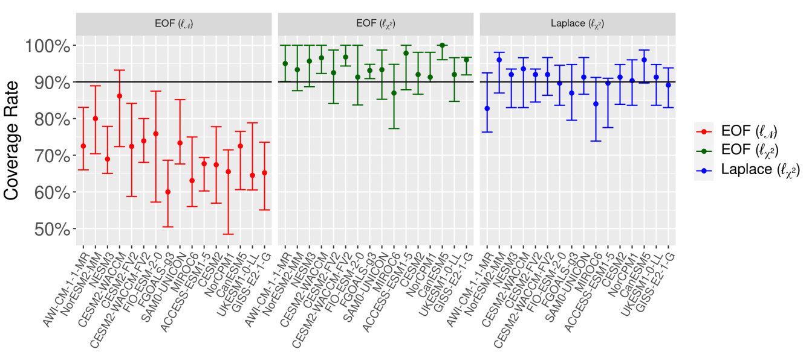
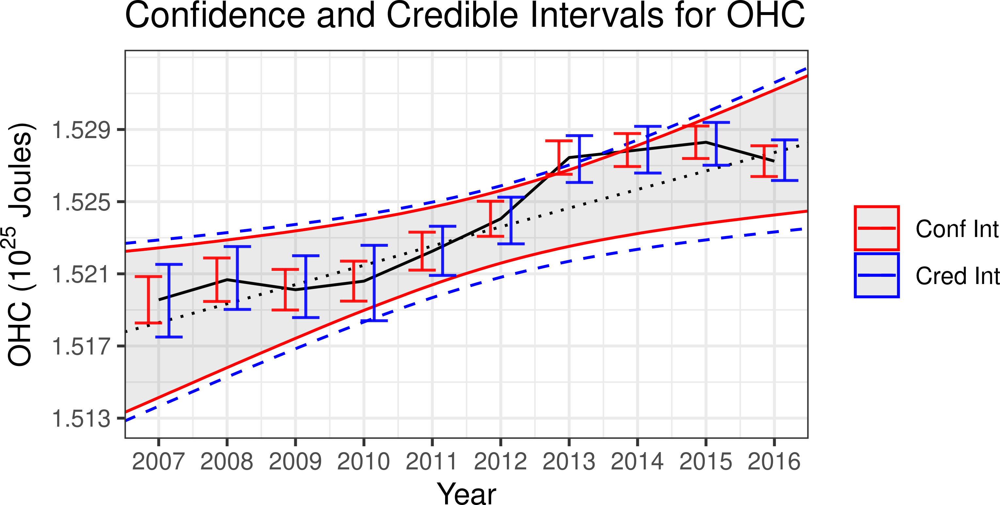
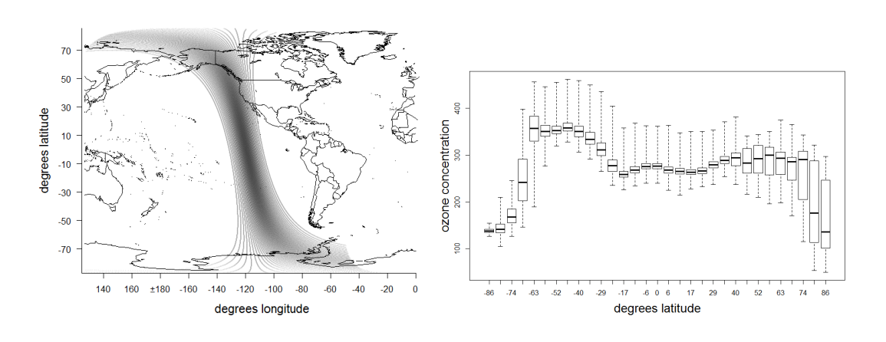
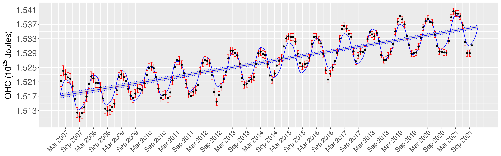
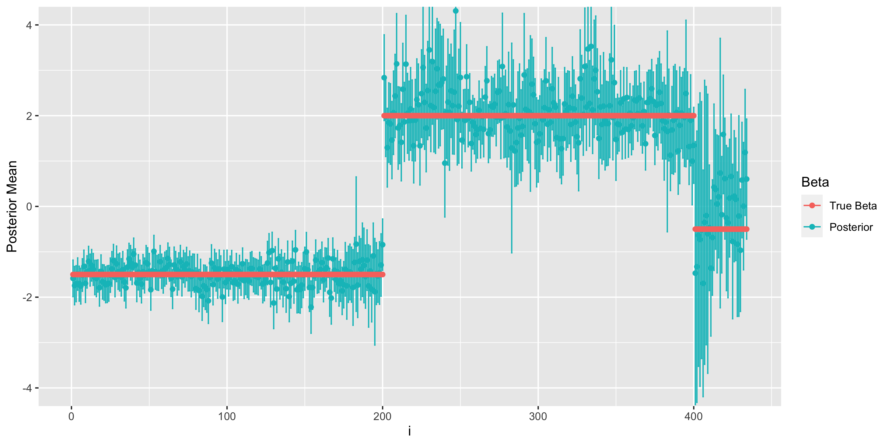
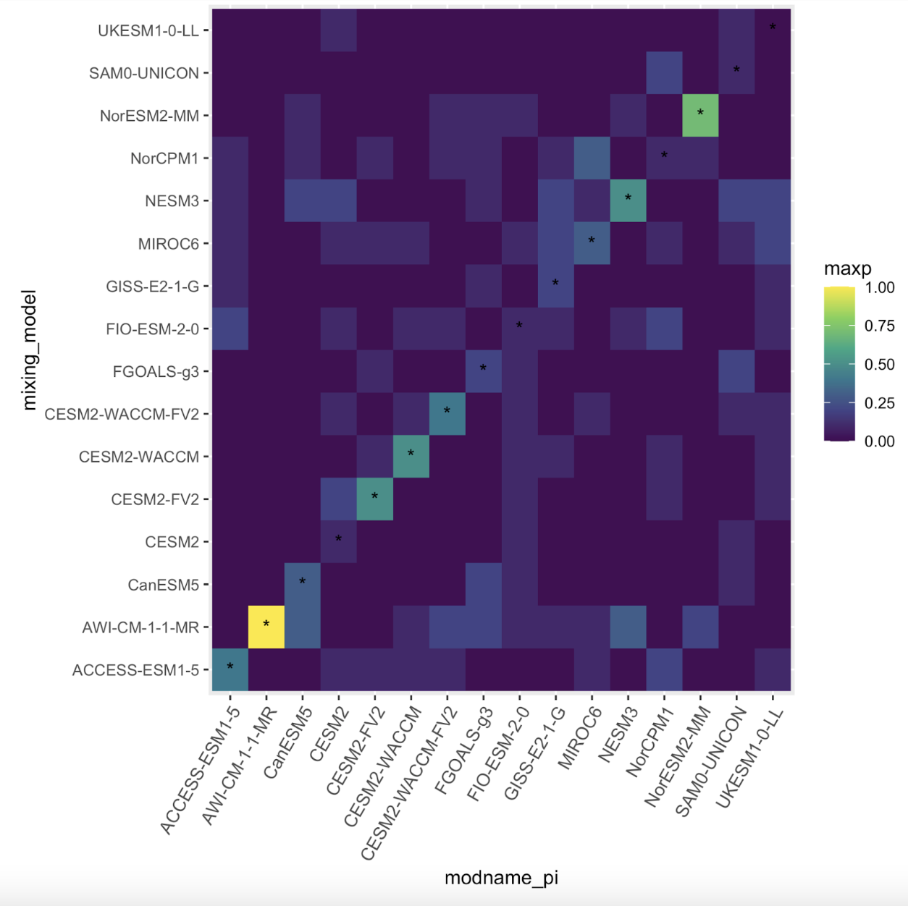
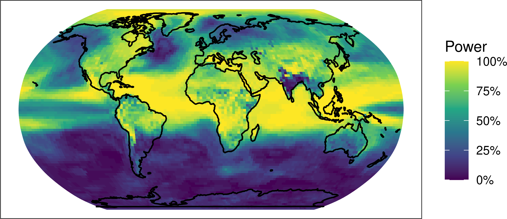

Abstract: Regression-based optimal fingerprinting techniques for climate change detection and attribution require the estimation of the forced signal as well as the internal variability covariance matrix in order to distinguish between their influences in the observational record. While previously developed approaches have taken into account the uncertainty linked to the estimation of the forced signal, there has been less focus on uncertainty in the covariance matrix describing natural variability, despite the fact that the specification of this covariance matrix is known to meaningfully impact the results. Here we propose a Bayesian optimal fingerprinting framework using a Laplacian basis function parameterization of the covariance matrix. This parameterization, unlike traditional methods based on principal components, does not require the basis vectors themselves to be estimated from climate model data, which allows for the uncertainty in estimating the covariance structure to be propagated to the optimal fingerprinting regression parameter. We show through a CMIP6 validation study that this proposed approach achieves better-calibrated coverage rates of the true regression parameter than principal component-based approaches. When applied to HadCRUT observational data, the proposed approach detects anthropogenic warming with higher confidence levels, and with lower variability over the choice of climate models, than principal-component-based approaches.
DOI: https://doi.org/10.48550/arXiv.2208.02919

Abstract: The accurate quantification of changes in the heat content of the world’s oceans is crucial for our understanding of the effects of increasing greenhouse gas concentrations. The Argo program, consisting of Lagrangian floats that measure vertical temperature profiles throughout the global ocean, has provided a wealth of data from which to estimate ocean heat content. However, creating a globally consistent statistical model for ocean heat content remains challenging due to the need for a globally valid covariance model that can capture complex nonstationarity. In this paper, we develop a hierarchical Bayesian Gaussian process model that uses kernel convolutions with cylindrical distances to allow for spatial non-stationarity in all model parameters while using a Vecchia process to remain computationally feasible for large spatial datasets. Our approach can produce valid credible intervals for globally integrated quantities that would not be possible using previous approaches. These advantages are demonstrated through the application of the model to Argo data, yielding credible intervals for the spatially varying trend in ocean heat content that accounts for both the uncertainty induced from interpolation and from estimating the mean field and other parameters. Through cross-validation, we show that our model out-performs an out-of-the-box approach as well as other simpler models. The code for performing this analysis is provided as the R package BayesianOHC available at https://github.com/samjbaugh/BayesianHeatContentCode.
DOI: https://doi.org/10.1214/22-AOAS1605

Abstract:Recursive skeletonization factorization techniques can evaluate an accurate approximation to the log-likelihood for irregularly sited two-dimensional spatial data under a Gaussian process in O(n^{3/2}) time and O(n log n) storage. We demonstrate the application of these techniques to data on the surface of a sphere by fitting a Matern model to approximately 87,000 total column ozone observations obtained from a single orbit of a polar-orbiting satellite. We then demonstrate that this fit can be improved by allowing either the range or scale parameters of the process to vary with latitude, but that the latter form of nonstationarity can be accommodated using skeletonization factorizations that do not need to be redone when optimizing over the parameters describing nonstationarity.
DOI: https://doi.org/10.1016/j.spasta.2018.09.001

Abstract:The Argo program has allowed for an unprecedented view of how global ocean heat content is changing, however, the complex properties of the ocean heat content field have made accurate quantification of the multi-year trend statistically challenging. Previous work has proposed a hierarchical Bayesian method for quantifying ocean heat content at a fixed time by modeling the spatial non-stationarity and anisotropic of the field. While this approach can infer the trend in ocean heat content over months, a more accurate picture requires a joint spatio-temporal model which takes into account both seasonality in the mean field and temporal correlation in the anomalies. In this paper, we propose a hierarchical Bayesian spatio-temporal model for ocean heat content that addresses these properties through a spatially-varying temporal range parameter field and a spatio-temporal Gaussian process to represent a seasonal structure that varies smoothly over space. This approach applied to ocean heat content observations from 2007 to 2021 is able to identify the ocean heat content trend with higher posterior confidence than would be expected just from the increase in the amount of data alone in the spatial-only approach. Due to the key role played by ocean heat content in regulating the atmospheric response to increasing greenhouse gas concentrations, these results have important implications for the estimation of transient climate sensitivity.
Link: Spatio-Temporal and Seasonal Modeling of the Ocean Heat Content Field.

Abstract: In the psychometrics literature, cognitive diagnost models assume the existence of latent skill profiles, the possession of which increases the probability of responding correctly to questions requiring the corresponding skills. Through the use of longitudinally administered exams the degree to which students are acquiring core skills over time can be assessed. While past approaches to longitudinal cognitive diagnostic modeling perform inference on the overall probability of acquiring particular skills, there is particular interest in the relationship between student progression and multi-level covariates such as intervention effects. To address this need, we propose an integrated Bayesian hierarchical model for student progression in a cognitive diagnostic setting. Using Polya-gamma variable augmentation with two logistic link functions we are able to achieve computationally efficient posterior estimation with a conditionally conjugate Gibbs sampling procedure. An alternative variational inference approach for fast approximation of the posterior distribution is additionally proposed. We show that this model achieves high levels of parameter recovery when evaluated using simulated data, and demonstrate the method on a real world educational testing dataset.

Abstract:Climate change detection and attribution methods leverage the physical understanding embedded in general circulation models (GCMs) to perform inference on real-world observations. While these models provide crucial information on the pattern of the forced signal and the covariance structure of natural variability, discrepancies between different GCMs present an additional source of uncertainty which is often not explicitly taken into account. To address this issue, we propose a hierarchical Bayesian model for climate change detection and attribution which uses a mixture model in combination with a Laplacian basis function parameterization of the internal variability covariance matrix to account for information from multiple GCMs in the inference procedure. Using historical simulations as surrogate observations, we show that mixture weights are generally concentrated on the “true” generating GCM. As guaged on surrogate observations the mixture model is able to achieve higher coverage rates of the true detection and attribution parameter than previous approaches which use only a single GCM. Finally, this method is applied to near-surface air temperature, finding a high probability of human influence.

Abstract:While it is well-established that increasing greenhouse gas concentrations will lead to warming surface temperatures and increased atmospheric moisture, it is difficult to quantify the extent to which observed climate changes can be attributed to human influence. Research on the “detection and attribution” of climate change has been successful in establishing that carbon emissions are to a large degree responsible for observed increases in global temperatures. However, while existing techniques have focused on large spatial scales, policy-makers and the public at large are more interested in impacts at the local level. In this paper, we propose a framework that provides for the first time an integrated methodology for making local detection and attribution statements while using the power of a global statistical model. This is done through a Bayesian hierarchical approach which uses spatial basis functions on the sphere to represent both the spatially-varying causal effect parameter and the structure of the covariance matrix describing natural variability. Using climate model simulations as surrogate observations, we show that this approach achieves higher statistical power than previous approaches which perform grid-cell analysis without accounting for the covariance structure of the global climate. The application of this framework to observed trends in near-surface air temperature, rainfall, and specific humidity shows a more spatially nuanced view of the effect of human activities on the observed climate.
Link: https://doi.org/10.1016/j.spasta.2018.09.001

I can be reached by email at samuelbaugh@lbl.gov.